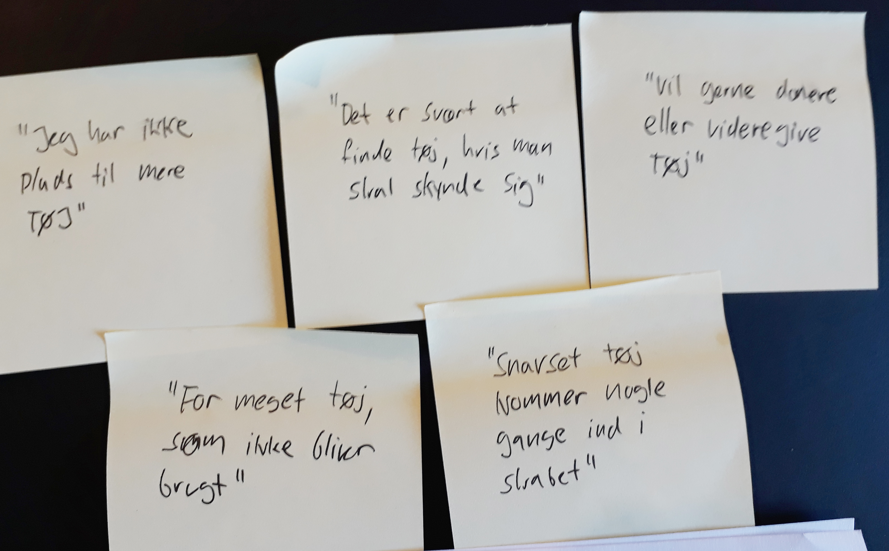

Experinece Map
Experinecemap... Brugerbehov og mål omsat til en "brugerrejse".
5 post-its:
post-its fra klassen
Pains/goals fra klassen

Problemformulering: Donér tøj
Brugeren har især et pladsproblem med sit klædsskab, som giver en del frustrationer - både når tøjet skal være i skabet, når det skal findes frem, og generelt ved organiseringen af det.
Problemet er bl.a. (pains)
- For meget tøj som ikke blev brugt
- Svært at få sig taget sammen til at give det til genbrug, m.m.
- Usikkerhed omkring hvor meget tøj, der skal beholdes
Ønsket er (goals):
- Få plads i klædeskabet og nemmere hverdag
- Vil gerne donere eller eller forære det til venner/bekendte
- Få det godt, fordi tøjet går til et godt formål
Hovedproblem til appen: Han kan ikke finde ud af hvordan han kan donere sit tøj
Hovedløsning for app: Når han har doneret sit tøj
Løsning: Udvikle en app, hvor man hurtigt og nem kan donere sit tøj til genbrug.